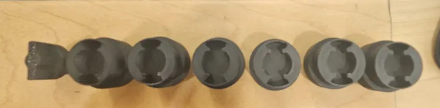
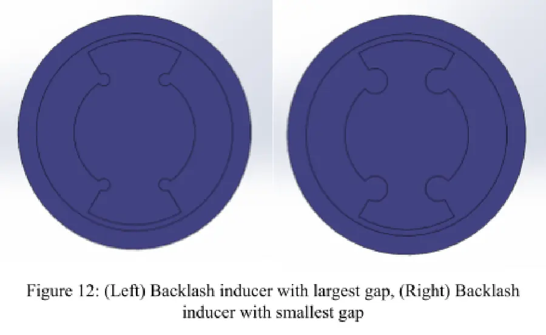
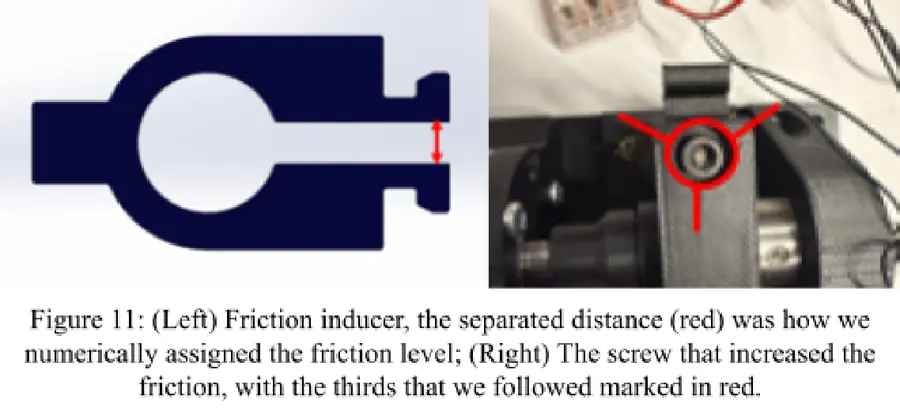
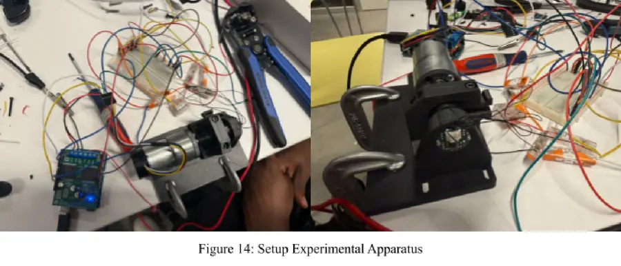
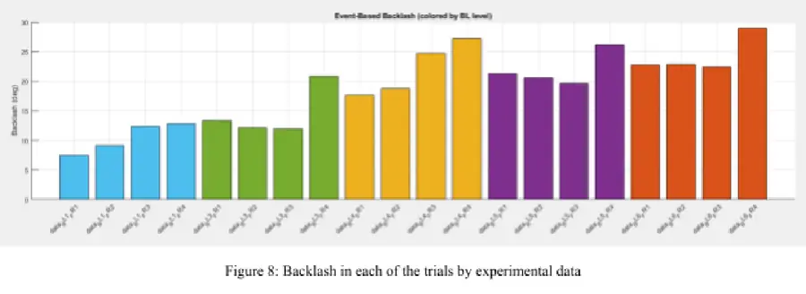
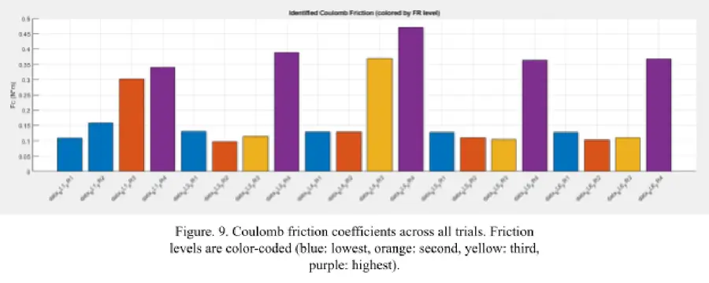
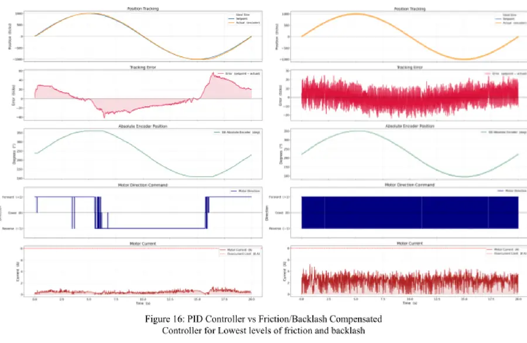

Motivation
Backlash was a persistent problem on the 6-DoF arm I designed for the Harvard rover team. Controllers are usually designed around idealized models, but real joints have backlash, a dead zone every time motion reverses, and friction: Coulomb, viscous and stick-slip effects that are worst at low speed. Rather than treat these as small disturbances, we set out to measure both and compensate for them inside the control loop.
Test apparatus
I designed a single-joint rig in which both nonlinearities are adjustable and swappable:
- Actuator and sensing. A 12 V, 251 RPM brushed DC gearmotor, with an incremental encoder on the motor side and a single-turn SSI absolute encoder on the load side. Encoders on both sides of the joint are what make backlash observable.
- Friction inducer. A clamp wraps the rotating shaft, with a screw that sets the normal force. Four friction levels were defined by tightening the screw in two-thirds-of-a-turn increments.
- Backlash inducers. Six interchangeable couplings between motor and load. Their internal corners are rounded, and a larger radius reduction leaves more play.
- Electronics. An Arduino Uno with a Pololu Dual VNH5019 driver, which replaced a TB6612FNG that couldn't supply the current of the high-friction trials. The driver's current sense was logged to identify friction torque.




Identifying backlash
We first modeled backlash as a classic hysteretic dead zone with half-width b:
That model assumes b is known. In this rig the backlash was deliberately varied and unknown in advance, and a fixed-b model predicted the same value for every trial. We replaced it with event-based identification: find the intervals where the motor encoder keeps moving while the output encoder stays put, which is motion through the dead zone, and measure it directly.
The identified backlash rose with the inducer gap, as it should, from about 10° on the tightest coupling to about 24° on the loosest.

Identifying friction
Friction was modeled progressively: Coulomb first, with viscous and Stribeck terms available if the data called for them. A smoothed Coulomb model captured the dominant behavior:
Fc was fit from logged motor current, used as a proxy for torque, against velocity. An early version didn't match the data because it didn't keep friction opposing the direction of motion. Correcting that sign dependence brought the model in line with the measurements.

Control
The baseline is a PID controller. With the joint horizontal and moving slowly, gravity and Coriolis terms are negligible, so the dynamics reduce to τ ≈ Mθ̈. Tuning the gains iteratively from 1/1/1 to Kp = 1.5, Ki = 0.5 and Kd = 0.05 cut the error range by about 45.5% on its own.
The compensated controller keeps that PID loop and adds the identified models. The Coulomb estimate becomes a feedforward torque, and the backlash estimate adjusts the motor-to-joint position relationship that the controller tracks against.
Experiments & results
We ran 20 trials across 5 backlash settings and 4 friction settings, each tracking a sinusoidal reference of ±1000 encoder ticks over a 20 s cycle. Every trial logged about 995 samples of setpoint, both encoder positions, PWM, direction and motor current.
At the lowest friction and backlash, compensation reduced the tracking-error range from about 60 ticks to 30 ticks, a 50% reduction. As the nonlinearities grew, the baseline's error grew with them, and the compensated controller reduced it in every condition we could test.

The trade-off is control effort. Compensation brought more frequent direction reversals and higher current, with surges at reversals as the controller pushes through the dead zone. At the highest friction and backlash levels those surges tripped the software current cutoff we had added after an earlier driver failure, so the most extreme cases couldn't be fully evaluated.
Takeaways
- A simple model is enough if it targets the dominant nonlinearity. Coulomb friction plus a data-identified dead zone gave roughly a 50% improvement.
- Event-based backlash identification is practical and easy to interpret. It needs two encoders, not a model with parameters to guess.
- Next steps: current-aware compensation, smoothing the compensation terms, and testing the friction and backlash terms separately to isolate each one's contribution.